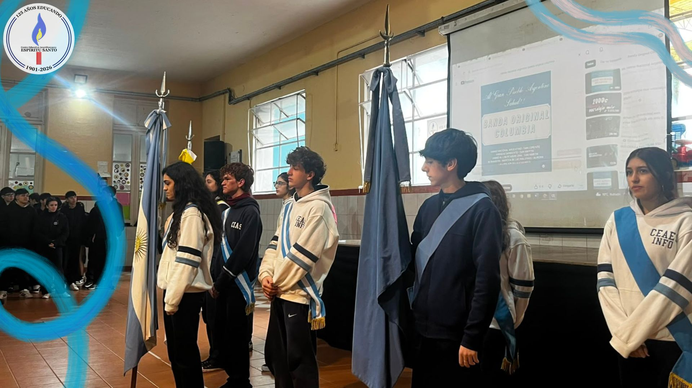
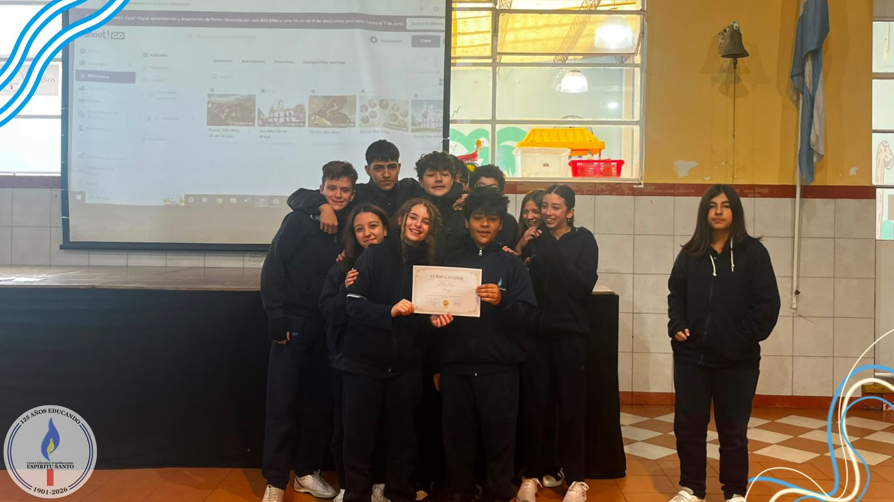
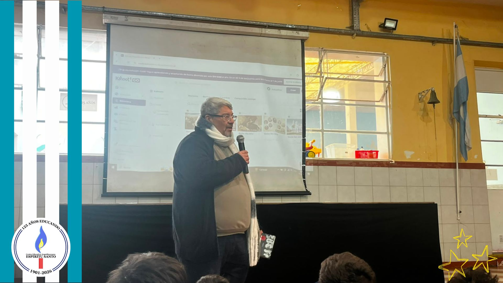

Acto del 25 de mayo
Por: Alejandro Angellotti y Guillermo Garófalo

Participó todo el nivel secundario.
Hoy, al conmemorar un nuevo 25 de Mayo, no recordamos solamente una fecha lejana aprendida en los libros. Recordamos un momento en el que un grupo de personas se animó a imaginar un país distinto. Un momento en el que hombres y mujeres comunes entendieron que la historia no estaba escrita para siempre y que el futuro podía cambiarse.
La Revolución de Mayo fue, ante todo, un acto de valentía colectiva. No nació de la comodidad ni del conformismo, sino de la necesidad de construir una sociedad más justa, más libre y más soberana. Y aunque aquellos ideales todavía siguen incompletos, continúan siendo una guía para pensar el presente.
Hoy vivimos en un mundo atravesado por desigualdades, discursos de odio y muchas veces por la indiferencia. Por eso, recordar el 25 de Mayo también significa preguntarnos qué hacemos nosotros frente a esas injusticias. Porque la patria no es solamente un territorio o una bandera: la patria es nuestro hermano necesitado. La patria es el acceso a la salud, es la solidaridad, es el derecho a estudiar, a trabajar, a expresarse y a vivir con dignidad.
En ese sentido, las palabras del Papa Francisco nos invitan a reflexionar cuando dice: “Nadie se salva solo”. Esa frase, sencilla pero profunda, nos recuerda que una sociedad crece cuando aprende a cuidar a quienes más lo necesitan y cuando entiende que el individualismo nunca puede estar por encima del bien común.
Por eso, hoy queremos hacer un llamado especial a las juventudes. Muchas veces se dice que los jóvenes son el futuro, pero la verdad es que también son el presente. Cada generación tiene sus propias luchas, y la nuestra necesita recuperar algo del espíritu revolucionario de Mayo: la capacidad de cuestionar lo injusto, de comprometerse con la realidad y de no aceptar que las cosas “son así” y no pueden cambiarse.
Ser revolucionario hoy quizás no signifique tomar un cabildo, pero sí defender la democracia, la educación, la memoria, los derechos humanos y la igualdad de oportunidades. Significa animarse a pensar críticamente, participar y construir comunidad.
Porque la historia no la cambian solamente los próceres. La cambian también los pueblos cuando deciden dejar de ser espectadores y convertirse en protagonistas.
Que este 25 de Mayo no sea solo un recuerdo del pasado, sino también una invitación a imaginar, entre todos y todas, un país más justo, más humano y más solidario.

